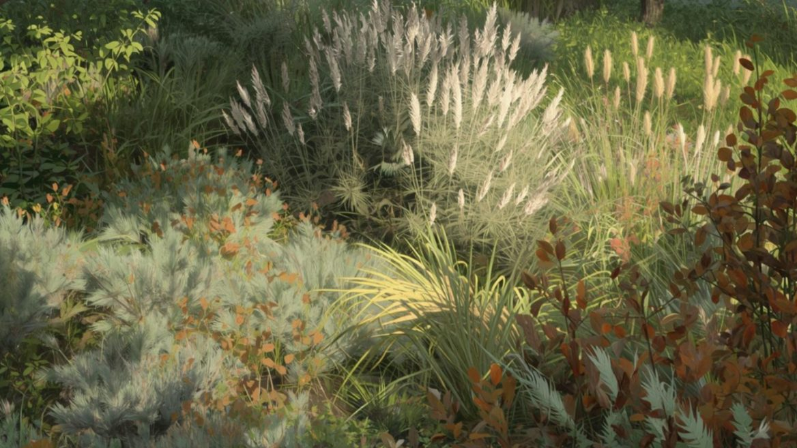
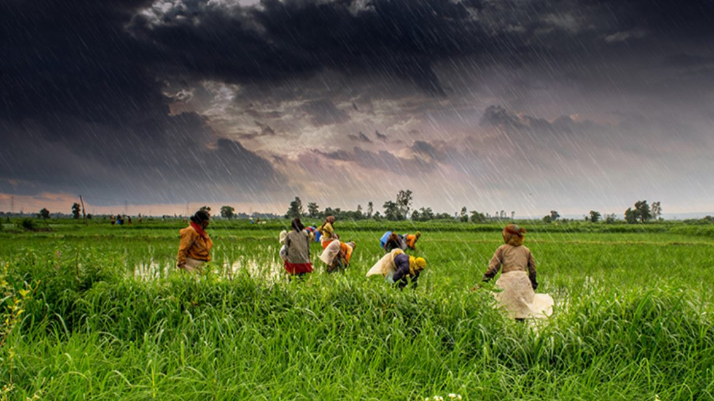
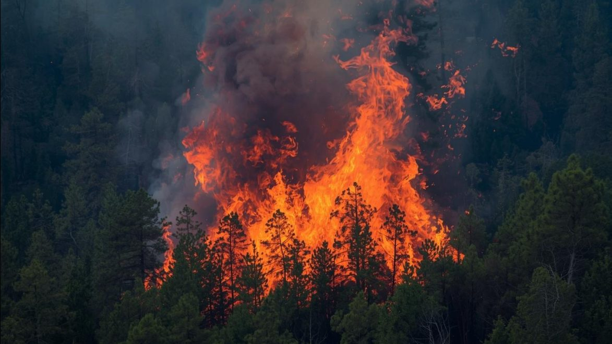
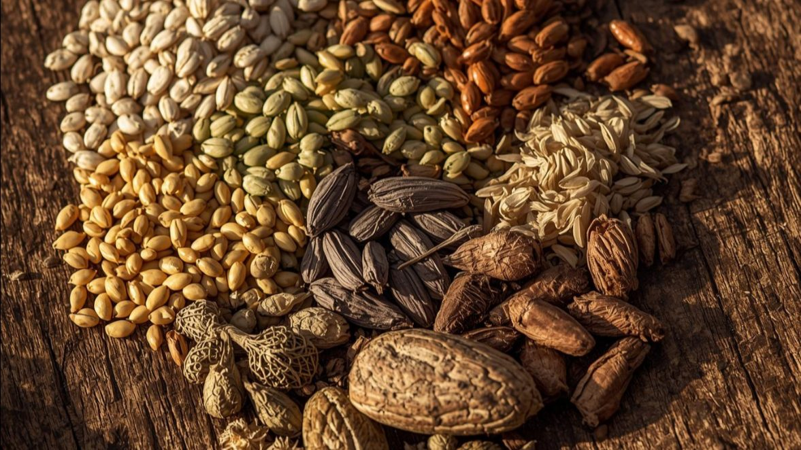
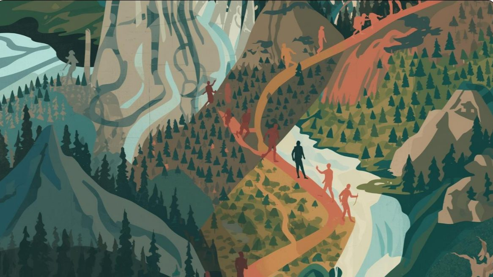
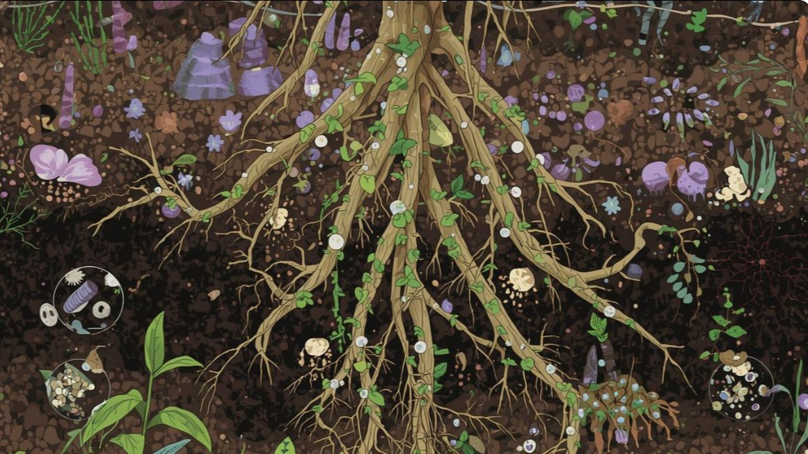

Vegetation Changes
Analysing ancient plant life reveals shifts in climate and ecosystems over millennia.
See related publicationsExploring human–environment interactions through time.

Analysing ancient plant life reveals shifts in climate and ecosystems over millennia.
See related publications
Using lipid biomarkers and stable isotopes to understand monsoon and environmental changes through time.
See related publications
Examining fire use informs about ancient management practices and landscape transformation.
See related publications
Analysing ancient diets sheds light on human-environment interactions and nutritional practices.
See related publications
Studying human patterns provides insights into adaptation and resource use in changing landscapes.
See related publications
Understanding soil ecosystems is crucial for deciphering climate impacts on ancient environments.
See related publicationsTracing Anthropogenic Changes and Environmental Evolution in Central Asia (TRACE)
Multi-proxy molecular and sedimentological investigation of environmental evolution and human impact across Central & South Asia.
Reconstruction of Climate, Vegetation and Fire Across Palaeolithic Transitions
Reconstructing climate variability, vegetation changes, and fire usage across Palaeolithic-to-Neolithic cultural phases in the Indian Subcontinent.
Role of Climate in Human Evolution in India
Doctoral project completed at IISER Kolkata investigating Quaternary archaeological sediments of Belan Valley, north-central India.
Soil Microbial Diversity Across Land-Use Patterns in India
A PLFA biomarker approach to analysing soil microbial diversity across agricultural and land-use gradients in India.